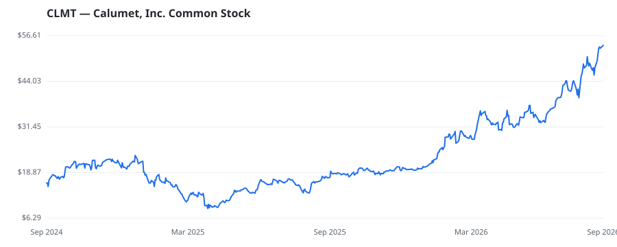

bullish · bearish · n/a — dots: price>SMA10 · SMA10>SMA50 · SMA50>SMA200 · up>down volume (20d)
Energy · mid cap

Calumet Inc is a producer of specialty products, including base oils, specialty oils, solvents, esters, and waxes, as well as a variety of fuel and fuel-related products, including asphalt and heavy fuel oils. The company manufactures, formulates, and markets a variety of specialty branded products to customers in various consumer-facing and industrial markets. Its segments include: Specialty Products and Solutions; Montana/Renewables; Performance Brands; and Corporate. The company generates maximum revenue from Fuels, asphalt and other by-products. PETROLEUM REFINING · website
| Revenue | $4.1B | Net income | $-33.8M |
|---|---|---|---|
| Operating income | $108.7M | Diluted EPS | $-0.39 |
| Assets | $2.7B | Equity | $-732.7M |
This name produced 1.1% of the ranked funds’ total alpha.
| Fund | Fund alpha vs SPY | Position | % of book |
|---|---|---|---|
| Wasserstein Management, L.P. | +94% | $143M | 59.6% |
| Adams Asset Advisors, LLC | +10% | $72M | 8.2% |
| GARNET EQUITY CAPITAL HOLDINGS, INC. | +11% | $3M | 1.3% |
Hedge data: SEC EDGAR 13F · ranked funds beat SPY in >50% of their quarters · fund alpha = mirror-portfolio return minus SPY.